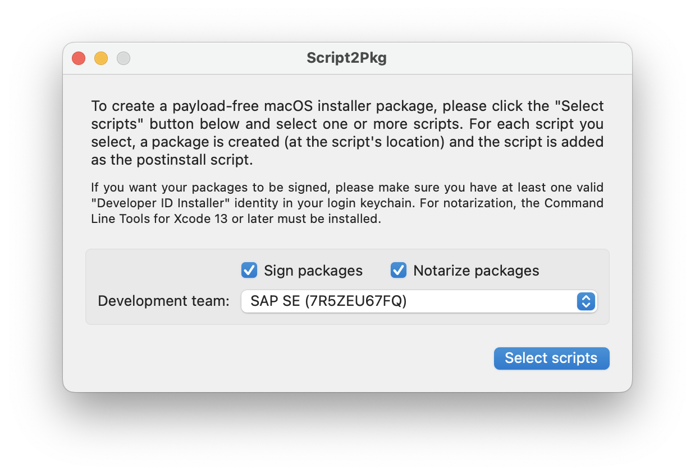
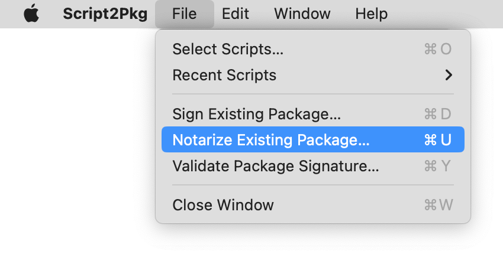
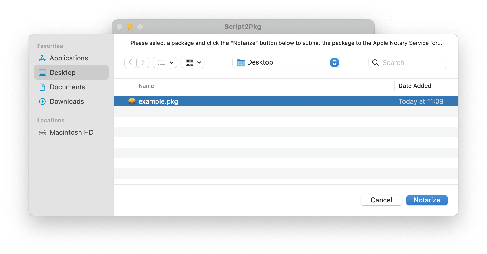
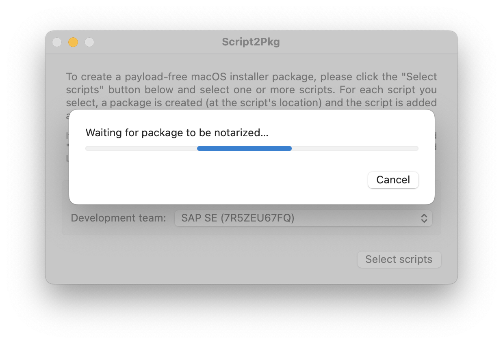
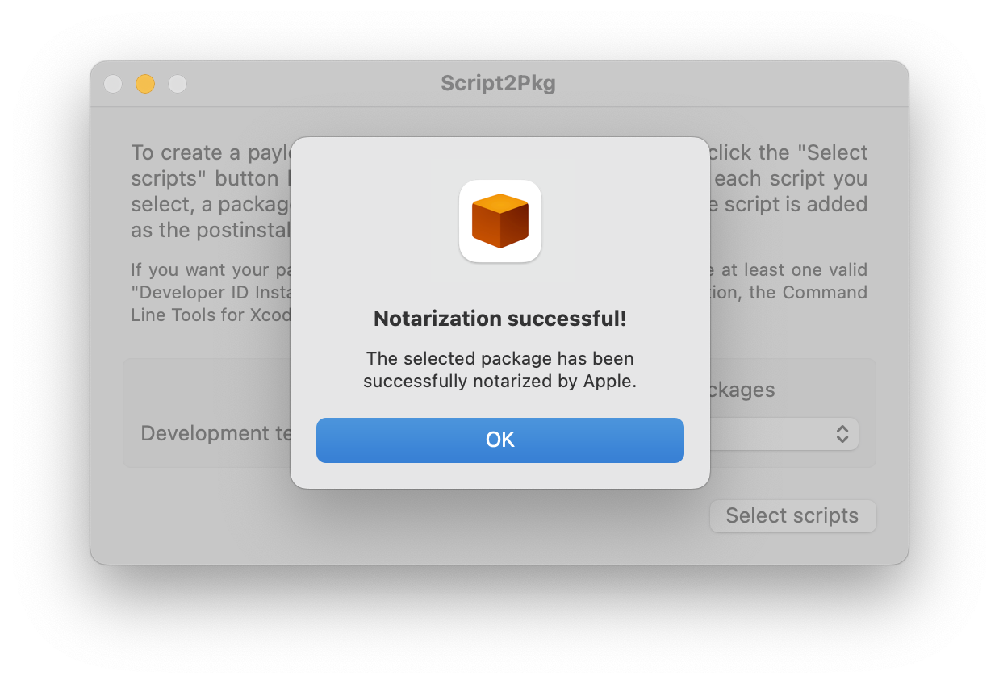

Script2Pkg
Script2Pkg
Script2Pkg
Notarizing existing packages
The app is able to notarize existing packages. Once you have an installer package you want to notarize, please use the procedure below:
1. Launch the app.
2. Make sure the Sign packages and the Notarize packages options are selected.

3. Under the File menu, choose Notarize Existing Package…

4. Select the package you want to notarize and click the Notarize button.

Notarizing a package (especially very large ones) may take a while…

5. The app will report back if notarization was successful.
